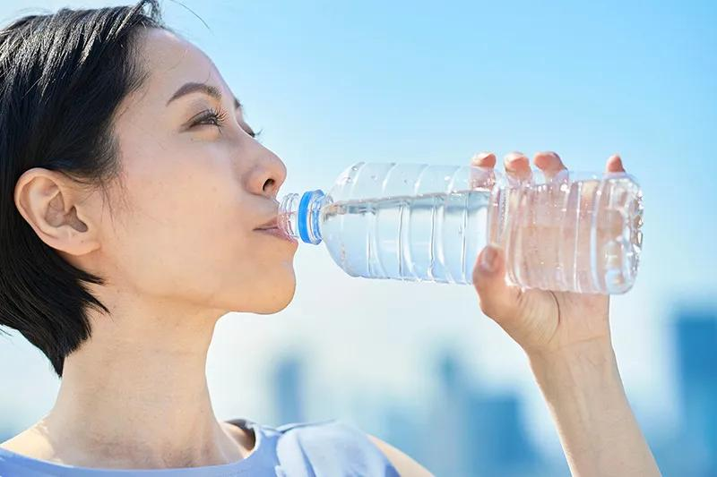

製成容器後，開始服務生活
PET 容器完成成形與品質檢查後，可依產品用途進行充填、封蓋、貼標及包裝，再經由物流配送到商店或消費者手中。透明、輕量等特性，使 PET 常見於飲料與部分食品包裝。
產品被使用，是資源旅程中的一個階段；使用後如何處理，會影響它能否進入下一站的回收系統。

1. 充填與包裝
容器依產品需求進行清潔或必要處理，再裝入飲料或其他適用內容物，完成封蓋、標示與包裝。食品接觸用途必須符合相關材料與製造管理要求。
2. 運送與販售
完成包裝的產品經由倉儲及物流配送到商店、販賣通路或其他使用場所。包裝重量、堆疊方式與運送距離，都可能影響運輸效率及資源使用。
3. 消費者使用
消費者購買產品後，依產品標示與用途使用。不同 PET 製品的設計與耐熱條件可能不同，不能因為材質同為 PET，就推論所有容器都適合裝熱飲或重複使用。
4. 使用後的選擇
使用後可先思考是否仍有安全、合適的再使用方式；若不再使用，則依所在地規定妥善分類與交付回收。容器若沾有內容物，應先倒空，並依當地回收指引處理。
本階段流程簡圖
🏭
充填包裝裝入內容物並封蓋🚚
運送販售配送至各使用場所👤
消費使用使用後妥善處理不同 PET 產品用途與設計不同。請依產品標示使用；不要將一般飲料瓶一概視為可裝熱水、微波或長期重複使用的容器。
這一站的重點
使用階段不只是消費，也包含使用後的選擇：適當再使用，或依規定分類回收。
小小檢查看看
一般 PET 飲料瓶使用後，若不再使用，較適當的下一步是什麼？